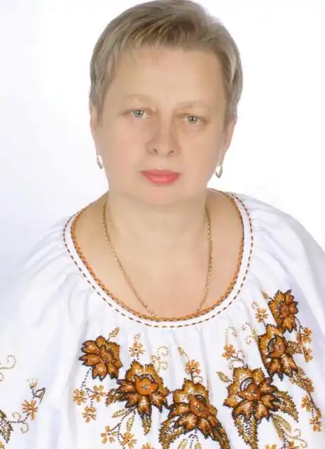

Галина Романівна Гузовська-Корицька (народилася 6 червня 1963 року в селі Скоморохи Бучацького району Тернопільської області) — педагог, науковець, автор науково-методичних електронних ресурсів. Кандидат філологічних наук, доцент. Автор понад 100 наукових, навчально-методичних публікацій і електронних ресурсів. У 1987 році закінчує Чернівецький державний університет за спеціальністю "Філолог. Викладач української мови та літератури". Трудовий шлях розпочинає в Запоріжжі, куди направлена за розподілом після закінчення вузу: 1987-1992 – учитель української мови та літератури ЗОШ І-ІІІ ст. № 69; 1992-1997 – заступник директора Запорізького колегіуму "Елінт", – учитель української мови та літератури, народознавства; 1997-2001 – методист Науково-методичного центру управління освіти Запорізького міськвиконкому.
Працює в комунальному закладі "ЗОІППО" Запорізької обласної ради з 2001 року: 2001-2003 – методист; 2003-2006 – старший викладач; з 2006 року – доцент кафедри філософії та суспільно-гуманітарних дисциплін. Після закінчення аспірантури (2005) захистила кандидатську дисертацію (2006). У 2008 році присвоєно вчене звання доцента. Фахівець в галузі педагогіки, методики викладання української мови та літератури, розвитку професійної майстерності вчителів-словесників. Має досвід викладача в системі післядипломної педагогічної освіти.2003-2014 – завідувачка науково-дослідної лабораторії мовно-літературної освіти, продовжує експериментальні розвідки з проблем: "Наступність і перспективність між початковою й середньою ланками освіти в навчанні дітей української мови".
Є активним організатором і учасником обласних, Всеукраїнських науково-практичних семінарів, Всеукраїнських та Міжнародних конференцій, І Міжнародного форуму, ІІ Українського Педагогічного Конгресу. Є автором чи упорядником навчально-методичних посібників, за якими працюють учителі України"Збірник диктантів для 5-11 класів: на народознавчій основі" (рекомендовано Міністерством освіти і науки України),"Збірник переказів з української мови. 5-9 класи" (рекомендовано Міністерством освіти і науки України),"Мовленнєва діяльність. 5-8 класи","Мовленнєва діяльність. 9-11 класи","Українська література. 5 (6, 7) клас: Тематичне оцінювання знань","Витоки (виховні години, свята)","Література рідного краю","Відкриті уроки з української мови" (рекомендовані науково-методичною радою КЗ "ЗОІППО" ЗОР),Активно поєднує традиційні та інноваційні форми навчання.